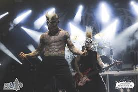

Slaughter-to-prevail

Slaughter To Prevail est un groupe de deathcore originaire de Russie, connu pour son style extrêmement agressif et sa puissance sonore. Le groupe s’est imposé rapidement sur la scène metal moderne grâce à une musique directe, brutale et sans compromis.
Le son de Slaughter To Prevail repose sur des riffs lourds, des rythmes percutants et une intensité constante. Le groupe privilégie une approche frontale du deathcore, offrant une musique violente et énergique, pensée pour un impact maximal aussi bien sur scène que sur les enregistrements studio.
Aujourd’hui, Slaughter To Prevail est reconnu comme l’un des groupes les plus marquants du deathcore contemporain. Sa popularité continue de croître grâce à une identité affirmée, une présence scénique forte et une musique orientée vers l’efficacité et la puissance.
- Origine : Russie
- Genre : Deathcore
- Année de formation : 2014